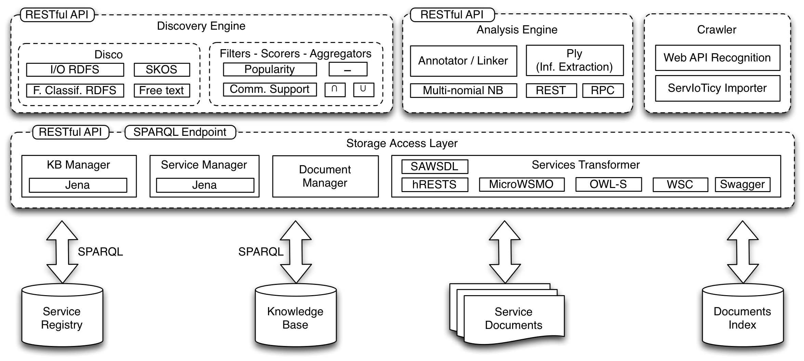

iServe has been implemented following the three-layer architecture presented in the Figure below.
The bottom layer is in charge of managing the registry’s data that includes Service descriptions, related documents (e.g., original files), and the corresponding Ontologies. This layer essentially provides a RDF/S and OWL storage and reasoning support, document storage, as well as basic crawling facilities to e.g., automatically obtain referenced Ontologies.
RDF/S and OWL storage and reasoning support is delegated to dedicated engines which are accessed by means of the SPARQL 1.1 standard. As a consequence, the reasoning capabilities of iServe depend largely on the actual configuration of the underlying store.
File storage is currently supported directly by the file system although the actual implementation to be used could be switched easily in anticipation to more scalable solutions that could for instance delegate this to more scalable options if necessary.
On top of the data layer, iServe provides a storage and management layer that is in charge of:
Finally, the third layer is in charge of providing advanced discovery and analysis functionality exploiting the data held by the registry.
Currently the code base only includes the functionality for advanced discovery as a set of plugins. The Crawler and Analysis Engine modules are still work in progress and have therefore not yet been released to the public.
The functionality of the upper two layers are exposed as RESTful services so that both Web interfaces and external applications can easily use them. In the case of Service descriptions this therefore represents a Read/Write Linked Data API.